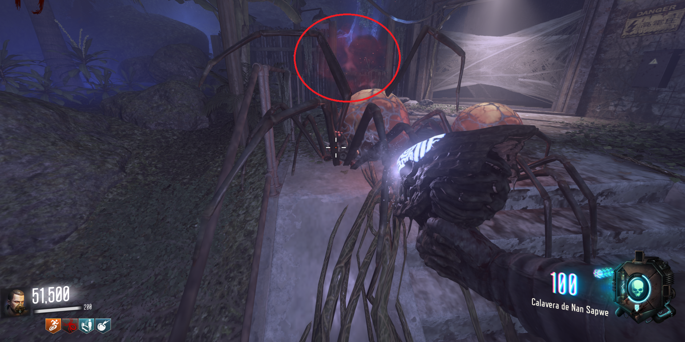
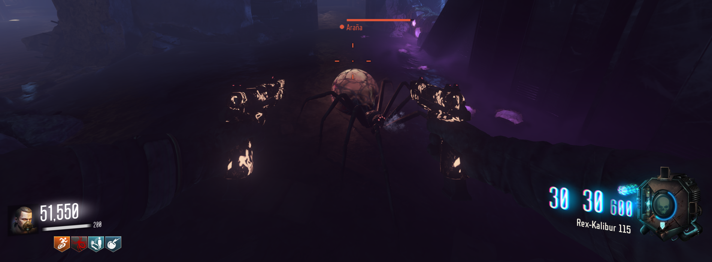
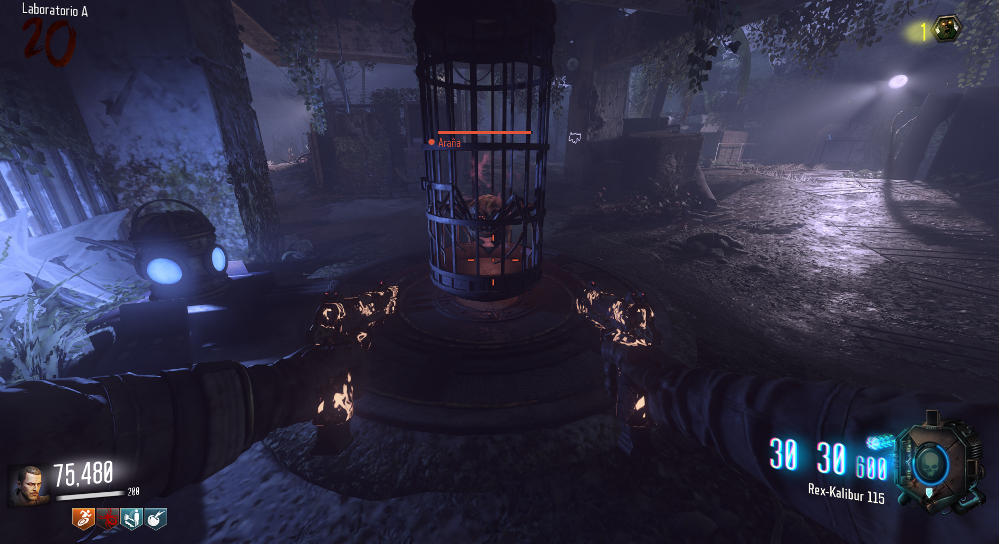
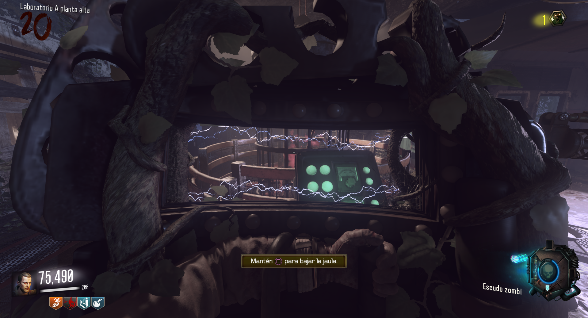
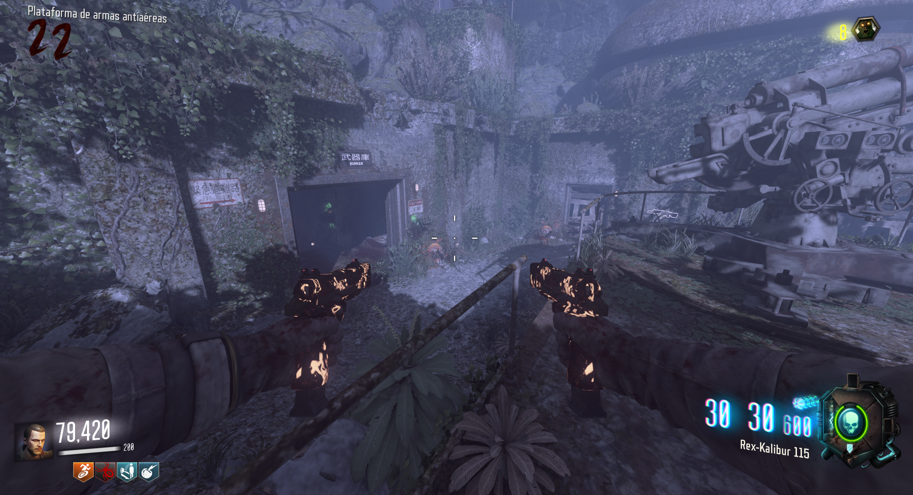
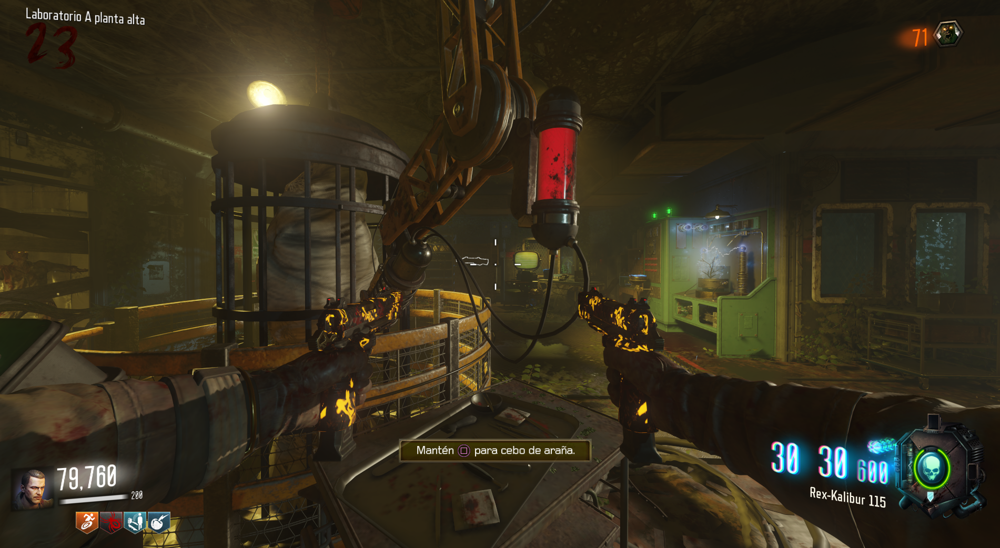

Requisitos: Pieza del veneno de araña de la KT-4, calavera de Nan Sapwe, desafíos completados y el escudo.
La araña señuelo, es una araña que podremos controlar dentro del juego.
Ronda de arañas:
El primer paso es esperar a una ronda de arañas y con la calavera revelar cuál de ellas tiene un humo naranja a su alrededor.

Tendremos que hacer que nos siga a cada uno de los 3 líquidos del mapa (azul, verde y morado) y beba de ellos. Recomiendo matar al resto de arañas.

Cuando beba de los tres, volveremos al Laboratorio A, y haremos que entre en la jaula.

La subiremos y con el escudo electrificado le daremos un golpe CaC (cuerpo a cuerpo), al panel. Luego la bajaremos y se irá debajo del suelo.

Tendremos que esperar a que vuelva otra ronda de arañas y notaremos que estas tienen más vida.

Según acabe esa ronda volveremos al Lab A y subiremos la jaula. De esta manera obtendremos el señuelo.
